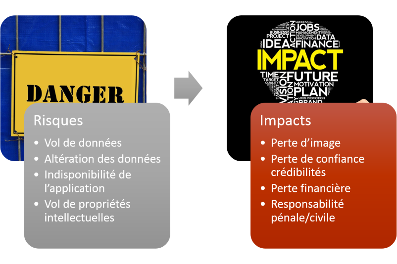
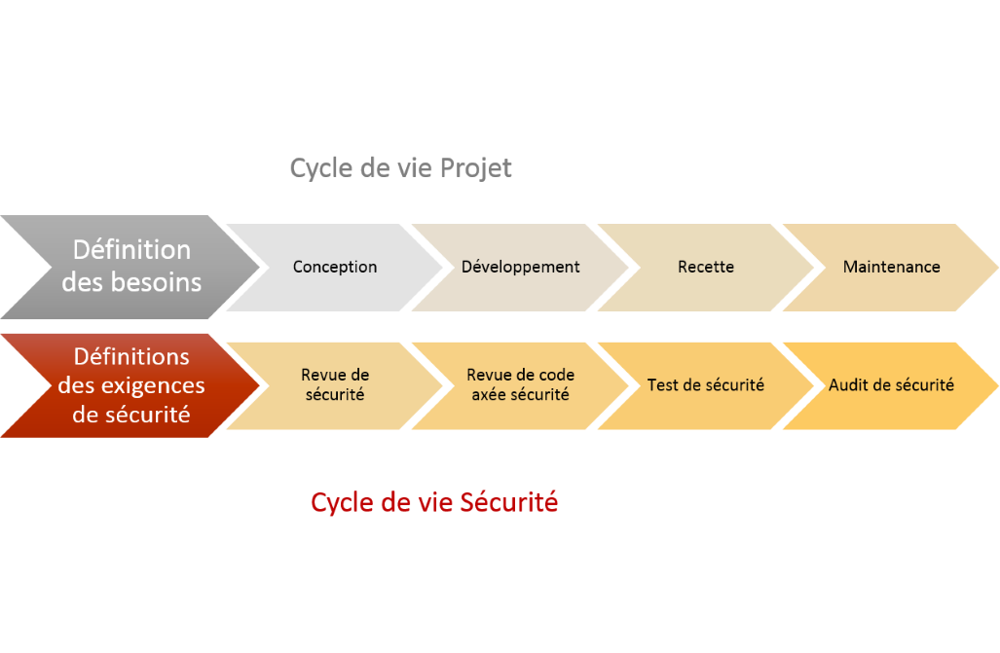
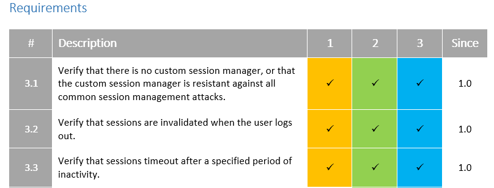
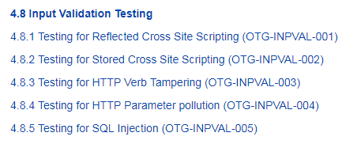

Presentation: (C) David Derigent, 2017. CreativeCommons Attribution License.

Sécuriser les applications web : pourquoi ? comment ?
David Dérigent
Référent sécurité applicative à Open Groupe
19-10-2017


Quelques chiffres et faits marquants
Orange 2014
En février les données personnelles de 800.000 clients (noms, prénoms, adresses), sont dérobées suite à une intrusion informatique
En savoir plus ...En avril les données personnelles (nom, prénoms, adresses, date de naissance, téléphone) de 1.2 millions de clients sont dérobées
En savoir plus ...TV5 Monde Avril 2015
Une cyberattaque contre la chaîne de télévision francophone TV5 Monde entraîne l'arrêt de la diffusion des programmes, et la publication de messages de soutien à l'État islamique sur ses réseaux sociaux.
Coût : 8 millions d'euros
Investissement pour lutter contre les cyber attaques : 10 millions d'euros
Activité au ralenti pendant de nombreux mois
Hertz France Juillet 2017
La CNIL inflige une amende de 40 000 € à Hertz
pour la présence d'une faille permettant
une violation des données
de plus de 40 000 clients de la société Hertz France.
En ajoutant à une url la chaîne cartcb_id= suivie d’un identifiant
on pouvait récupérer les données personnelles de clients.
Quelques chiffres du rapport The 2017 Ponemon Institute Cost of a Data Breach Study
- Nombre moyen de violations de données en France en 2017 : 24 211
- Coût moyen d’un incident en cybersécurité en France : 4.19 millions de dollars
Risques et impacts pour les entreprises
Hacker est devenu accessible à tous
www.shodan.io
- Scanne tous les appareils exposés sur Internet
- Les données récoltées sont accessibles en Open Data
- Une API est accessible pour automatiser les traitements
www.exploit-db.com : Les failles sont rapidement connues et exploitées
Gérer la sécurité applicative sur vos projets
La sécurité doit être intégrée dès le début d'un projet et à chaque étape
La toute première action à mener est la sensibilisation des équipes projet
Conception
Des exigences liées à la sécurité doivent être présents dans les spécifications et le dossier technique d'architecture
l'Application Security Verification Standard 3.0.1 de l'Open Web Application Security Project (OWASP) permet de s'assurer que l'on adresse les principaux risques

Développement
Le maitre mot est de se former, pour cela de nombreuses ressources sont disponibles sur le web
Guide de développement java OWASP
Divers outils ou plugins peuvent favoriser cet apprentissage
Recette
Le plan de test doit contenir des cas de test liés à la sécurité applicative
L'OWASP Testing Guide explique avec de nombreux détails comment controler les principales failles applicatives.

Exploitation
La sécurité d'une application c'est également :
La configuration de l'applicationLa configuration du système d'exploitation
la configuration du réseau
De nombreuses ressources sont disponibles pour connaitre les failles ou la mise à disposition de correctifs : CERT-FR , CVE
La mise en place d'un firewall applicatif (WAF) est très utile pour compléter l'arsenal défensif